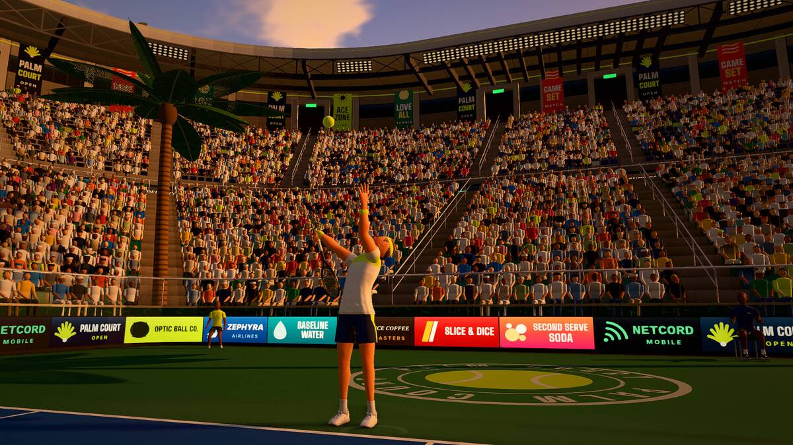

Key takeaways
- Use the continental grip, the "hammer" grip, so your forearm can rotate through the ball.
- A consistent toss is half the serve. Practise it on its own until the ball lands in the same place ten times out of ten.
- The motion is one flowing swing: toss and take-back together, bend, drive up, reach, snap through, and land inside the court.
- Learn to get the first serve in with some pace and spin, and make the second serve a spin serve you trust.
Start with the grip
Most coaches teach the serve with the continental grip. To find it, hold the racket by the throat with the strings vertical, edge of the frame up, and shake hands with the handle as if you were gripping a hammer. The base knuckle of your index finger now sits on the second bevel of the handle. It sits one bevel, an eighth of a turn, away from an eastern forehand grip, yet it feels quite different in the hand; the picture in the forehand article shows where every grip sits.
Beginners often serve with a forehand grip because it feels natural, and then find the ball goes up and lands in the net or flies long. The continental grip lets the forearm turn over at contact, which is what produces pace and spin. Switching takes a few weeks to feel normal, and it is worth it, because it is also the grip for volleys and overheads. Hold the racket lightly, as you would a bird you do not want to crush, and let the arm do the work.
Stance and starting position
Stand behind the baseline, near the centre mark if you are playing singles, with your feet about shoulder-width apart. Turn so that your non-hitting shoulder points roughly at the net. For a right-hander the left foot is the front foot, angled a little towards the right-hand net post, and the back foot lies roughly along the baseline. Your weight starts mostly on the back foot. You must not touch the baseline or the court with either foot until you have hit the ball: that is a foot fault. Many players find that a relaxed bounce or two of the ball before serving is a helpful routine.
The toss: half the serve
The toss decides where you make contact, so a bad toss means a bad serve however good the swing. Hold the ball in your fingertips, not tucked into the palm, and lift the arm straight up as if you were putting the ball on a high shelf. Let go at about eye height and keep the arm reaching up until the ball peaks. The toss should rise just above the highest point you can reach with the racket, so you meet it at full stretch as it starts to fall.
- For a flat serve the ball goes up slightly in front of you and a little to the right of your head, so a ball allowed to fall would land a foot or two inside the court.
- For a slice it goes a bit further to the right.
- For a kick it goes above your head, even slightly behind it, so you must arch your back to reach it.
To practise, toss ten balls and let each one fall. If they land in a tight group, your toss is repeatable. If they scatter, the cause is almost always a bent elbow or a flick of the wrist at release. Keep the arm long and let go early.
The motion in six steps
- Rhythm. Rock gently from the back foot to the front foot while the racket and the ball hang low in front. The rock starts the swing and keeps you loose.
- Toss and take-back together. The tossing arm rises and the racket arm drops down and then up behind, both moving at the same time, like a pendulum. If one arm waits for the other your rhythm breaks.
- The trophy position. At the top of the toss your knees are bent, the tossing arm points up at the ball, the racket is cocked up behind your head with the elbow near shoulder height, and your eyes are on the ball. Pause here in practice until the position is easy to find.
- Drive and drop. Push up through your legs. As your body rises, the racket head falls behind your back. This looser, deeper loop is where the racket speed comes from.
- Reach and contact. Reach up and slightly in front, with the arm fully extended, and hit the ball at the highest point you can comfortably reach. Just before contact the forearm rotates (pronation) so the racket face turns from edge-on to facing the net. Do not wait for the ball to drop to a comfortable height; the higher the contact, the more of the court you can see over the net.
- Finish and land. The racket continues across your body to the opposite hip, and your back leg swings through so you land on your front foot inside the court. Then recover, ready for the return.
Learn the motion without a ball first. Ten slow shadow serves, pausing at the trophy position each time, teach more than fifty rushed serves.
Flat, slice and kick
| Serve | Toss | Contact | What the ball does |
|---|---|---|---|
| Flat | In front, slightly right | Straight through the back of the ball | Fastest and flattest. It has the least margin over the net. |
| Slice | Further right | Brush around the right side of the ball | Curves sideways in the air and skids low after the bounce. |
| Kick | Overhead, a little behind | Brush up the back of the ball, from low to high | Heavy topspin: it arcs high over the net, drops quickly and jumps up after the bounce. |
Those toss and contact descriptions are for a right-hander; a left-hander mirrors them. Beginners should get a flat or lightly sliced first serve in play before adding a kick, because the kick demands a good back arch and the most precise toss of the three.
First and second serves
You get two chances, and they should not be the same serve. The first serve is where you can take a little risk for pace or a corner. The second must go in. Do not simply swing slower on the second serve, because a slow serve without spin floats and the receiver will attack it. Keep the same smooth swing and add spin: a kick or a heavy slice clears the net by a bigger margin and then dips into the box. A second serve that is a little slower but heavy with spin is a better serve than a fast one that lands in the net.
Where the serve must land: the ball goes diagonally across the net into the opposite service box, 6.40 metres (21 feet) from the net at its deepest. If the ball touches the net and still lands in the correct box it is a let and you serve again; a let on the second serve means only the second serve is replayed. For a tactical view of where to aim, see serve and return tactics.
Common faults and fixes
| Problem | Likely cause | Fix |
|---|---|---|
| Balls go into the net | Contact too low or too far behind you | Toss higher and reach up fully. Aim to hit the ball while your arm is straight. |
| Balls go long | Racket face open at contact, or no spin | Toss a little further forward and turn the forearm over. A touch of spin brings the ball down. |
| A weak "pat" with no pace | Arm only, no legs, or the racket arm stalling | Bend your knees at the trophy position and drive upward. Let the racket drop deep behind you. |
| Inconsistent toss | Bent elbow, flicking the wrist at release | Practise tosses alone: arm long, let go at eye height, let the ball fall each time. |
| Foot faults | Stepping on the line as you swing | Start a few centimetres behind the baseline and check where your front foot lands. |
| A sore shoulder | Too many serves too soon, or poor warm-up | Stop and rest. Build up gradually and read the warm-up and injury article. Persistent pain is a job for a doctor or physio. |
A 20-minute practice session
- Five minutes of shadow serves and toss-and-catch, no hitting.
- Serve from the service line into the box, ten balls. Once the motion works, step back a metre at a time.
- Target serving. Place a towel in the T corner and another wide, and serve ten to each from both sides.
- Serve and plus one. After each serve, imagine the return and move forward into the court to hit the next ball, so you practise the serve as the first shot of a point.
- Finish with ten second serves with spin, counting how many go in. Under pressure the second serve is the one that matters.
Try it in Palm Court
The game turns your swing into a serve with a toss and a timed swing, so it trains the rhythm if not the muscles. Open Play, Training, Drills and start Serve speed: twelve serves at a lit box, and every serve that goes in scores its speed, so reckless misses cost you. On a controller, ✕ / A hits a flat serve, ○ / B a kick and □ / X a slice, the same three serves described above. With a mouse you flick up to toss and swipe as the ball drops. The picture below is the game's own toss. Once you can hit the box on demand, take the rhythm into a Quick Match against the Rookie CPU and count your double faults; the how to play page lists the toss for every control.
